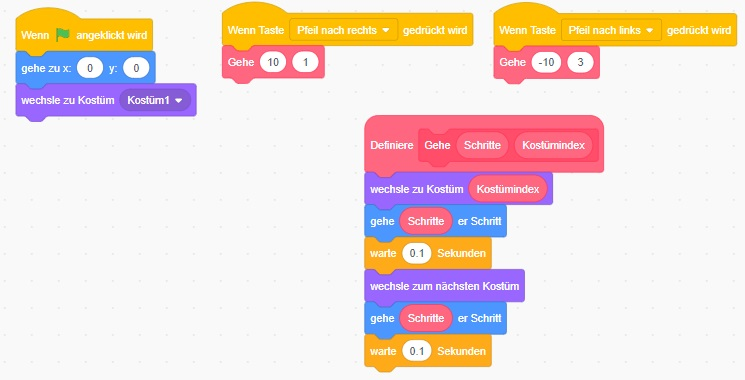

Wie lässt man Scratch animiert gehen - Variante 5
Da das Gehen in beide Richtungen sehr ähnlich ist, können wir für das Gehen einen Block erstellen.
Dieser Block bekommt als Parameter die Richtung und den Index vom Kostüm.
